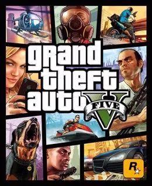
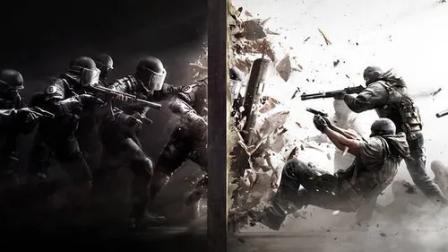
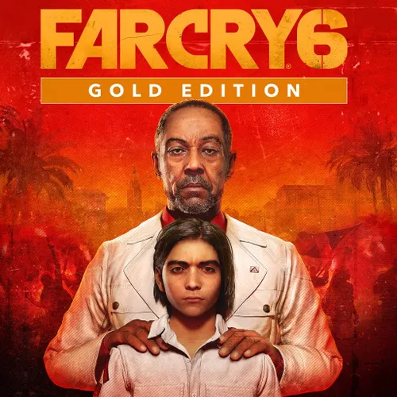
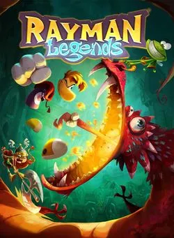
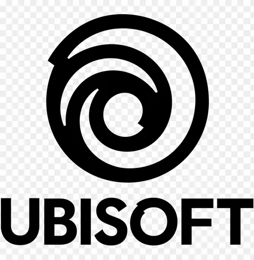

Grand Thef Auto V
GTA 5 es la quinta entrega de la exitosa saga de videojuegos sandbox desarrollada por Rockstar Games, Grand Theft Auto. Con millones de ventas a sus espaldas y uno de los mundos abiertos más ricos hasta la fecha
Tom Clancy's Rainbow Six: Siege
Tom Clancy's Rainbow Six: Siege es un videojuego de disparos táctico en línea en el que cada jugador asume el control de un atacante o un defensor en diferentes modos de juego, como rescatar a un rehén, desactivar una bomba y tomar el control de un objetivo dentro de una habitación.
Far Cry 6: Gold Edition
En Far Cry 6, encarna a un habitante de Yara y lucha usando tácticas de guerrilla y armas extravagantes para liberar a tu nación.
Rayman Legends
Rayman Legends es un videojuego de plataformas desarrollado por Ubisoft Montpellier y publicado por Ubisoft. Es el quinto título principal de la serie Rayman y la secuela directa del juego de 2011 Rayman Origins
  Reclamar Juego